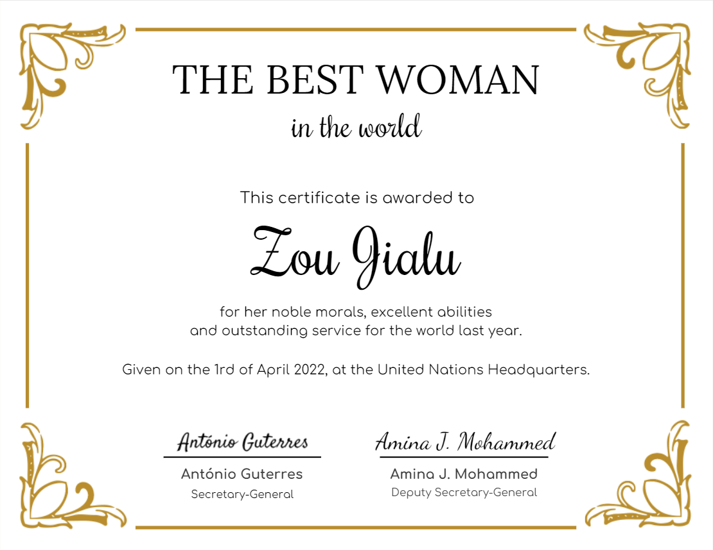
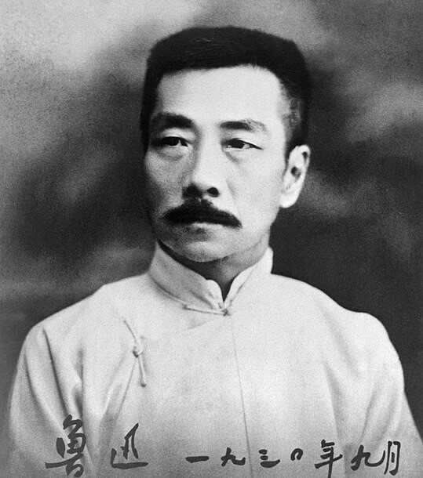

世界最优秀女性奖揭晓！
北京时间4月1日下午6时许，2022年世界最优秀女性奖揭晓。经联合国安理会两百多个国家多轮投票，高票当选。
最优秀女性奖是世界各国人民为激励女性变得更优秀而于2022年设立的奖项，每年授予一位女性。因其优良的品德以及卓越的能力，毫无悬念的获得首届“世界最优秀女性”称号。

-
Donald Trump
Nobody knows the best woman better than I do. It's obvious Zou Jialu is the best woman, maybe in the history of the world.
-
世界最优秀男人
一个优秀的男人背后往往都有一个优秀的女人。世界最优秀男人的女朋友当然也是世界最优秀女人。
-

鲁迅
最优秀女性称号邹家璐当之无愧。娶邹家璐对一个男人来说是人生中最幸福的事。这句话我真的说过！